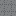
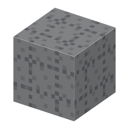

説明
①子ども 中に鋼の棒が入ったコンクリート。とても強い。
②学生 灰色のコンクリート8＋鋼（鉄筋）→ 8。ふつうのコンクリートの十数倍、爆発に強い。
③大人 コンクリートは押す力に強いが、引っぱる力にはとても弱い。鋼は引っぱる力に強い。熱でのびる割合（熱膨張率）がほぼ同じなので、暑さ寒さで割れない。コンクリートのアルカリが鋼のさびも防ぐ。
④ガチ 1867年、フランスの庭師ジョゼフ・モニエが、鉄の網を入れた植木鉢で特許を取った。今のビル・橋・ダムのほとんどがこの組み合わせ。
作り方
使い道
（このアイテムを使うレシピは無い）